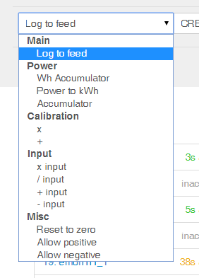

Ok i'm lazy to look for info! :)
Seriously, what is the mindset behind lowwrite version, why you need a specific version and how it's accomplished?
Archived Forum |
|
V8.6 - 9.x (extended) DevelopmentSubmitted by chaveiro on Fri, 03/07/2015 - 19:43Ok i'm lazy to look for info! :) Seriously, what is the mindset behind lowwrite version, why you need a specific version and how it's accomplished? » |
Re: V8.6 - 9.x (extended) Development
I think Trystan is by far the best guy to answer this in full, but IMO to answer your Q's
To reduce wear and possibility of failure when running on an SDcard.
I like to think we don't, we just need a "low-write" mode of operation, which can be enabled/disabled in the settings.
The OS is mounted read-only and the data files etc are moved to another partition which is mounted RW without Journaling.
The data being processed by emonCMS is held in RAM and only written to disc every minute in efficient block sizes.
Data can only be appended to the data feeds and not overwritten
All editing of historical data is disabled.
All write intensive processes are removed.
Use of SQL is reduced to settings only
SQL based feeds are not used
Last updated at and last value are not recorded in SQL tables
This is from memory so forgive any omissions/errors but I think I got most of the main items. The "buffered-writing" is managed by a "feedwriter" service and you can get more info on the low-write research here.
This is all relates directly to "low-write" functionality but doesn't reflect all of the differences found in the "low-write" version as there is also a lot of new functionality and changes to the input/node modules etc that is specific to the current low-write "version" of emoncms but isn't "low-write" specific, if that makes sense.
Paul
Re: V8.6 - 9.x (extended) Development
Also The log files and temp files are moved to a ramdisk further limiting writes to the SD Card. Memory swapfile is disabled too IIRC. as is the last accessed time for read files. The read only file system means there is less likely to be corruption of the OS if there is a power failure.
Re: V8.6 - 9.x (extended) Development
Write only filesystem is a config of the os.
So lowrite version is a full linux image or just emoncms?
Re: V8.6 - 9.x (extended) Development
I think it's a separate branch of the main project on GITHUB.
Does anyone know if it's possible to add in bits of the extended branch to it without breaking the low write part?
Re: V8.6 - 9.x (extended) Development
Yes, read-only is the OS, the original "rock-solid gateway" was a forwarding only SDcard image consisting of the OEM gateway (emonhub's predecessor) installed to IPE-R1, a custom read-only OS based heavily on raspbian, buffering and forwarding data to a remote emoncms, usually emoncms.org.
The "rock-solid gateway" was very stable and reliable because of the resilience of a read-only file system, but IPE-R1 got out of date and started causing problems when updating and had little or no support.
So emonHub running on a stock Raspbian lightly modded to mount read-only replaced the "rock-solid gateway" and emoncms low-write was included but dormant, on the new SDcard image for those who wished to enable it.
The read-only is more about safeguarding the filesystem against accidental writes and corrupt settings etc but every little helps, it works for low-write too, if it is read only the log and temp file writing is reduced. aside from incidental write reductions I don't think there is a major need for read only to provide low-write.
The low-write emoncms is indeed a separate branch which is why this thread and other recent discussions are exploring the possibility of "merging" them. And hopefully that will encourage development of both strains of emoncms on a common path where possible, but currently most of the stuff that isn't in the low-write isn't there for a reason eg heavy dependence on SQL is probably the most common reason for exclusion.
"Low-write" has to be a total mindset to develop emoncms to run reliably on an SDcard so must work efficiently with the OS and other softwares, so while technically it is specifically the emoncms version, It demands a low-write environment too,
Another side product of the read-only image is it forces us to put ALL the files that must be written to and persisted on a RW partition which could suit easy back-up and restore routines by separating file system and user files.
Paul
Re: V8.6 - 9.x (extended) Development
So i downloaded last github 8.5 and last low-write branches and did a file by file compare.
Last 8.5.2 XT is compatible with 8.5 standard, so the comparison applies to it also.
Here is the comparison and what need to be done, really just 3 file in red must be careful analyzed, orange just a merge and green just copied :
https://docs.google.com/spreadsheets/d/1Pt4W4z3BQM5ipIqvVTtlAEEV13P41ucY...
My conclusions:
My propose is to ditch all version of emoncms to date, add the suggested requirements to 8.5.2 xt and make a universal version for all with buffered writing being a configuration flag.
I can help doing the changes but cant test as i dont have redis on my shared server.
Let me hear from who wants to help.
Re: V8.6 - 9.x (extended) Development
Although I have very limited programming skills, I do have a Raspberry Pi with Redis running, and could help with testing.
It would be reassuring however at this stage to get some feedback from Trystan & Glyn, to establish if this fits into their development plan, and gets their support.
Paul
Re: V8.6 - 9.x (extended) Development
That's interesting ! and I think everyone would benefit from a single emoncms so I'm happy to help it I can, If I could code PHP I would of probably tried this myself by now but we don't need another version that's for sure.
It would seem that aside from a few user settings to set minor preferences, we could really boil this down to 2 main settings "disable_redis" and "disable_sql" to give us 3 options.
"Full" which uses both redis and sql,
"Redis only" AKA "low-write" for which redis is mandatory and SQL (logging) is not an option
"SQL only" for "shared hosting or windows" for which SQL is mandatory and redis is not an option
These 2 flags could allow/prohibit the running of the feedwriter and installation redis as well as control the availability of sql as a data logging engine.
I'm happy to set up a RPi to initially test the XT branch on a Pi, although some write activity tests & comparisons will be needed too as it's not just about if it works but about minimizing the writes too.
I know Paul Reed is using your XT version currently, installed to a RPi running a HDD (so redis will be active I believe) and he is very active at testing and reporting errors, so all 3 scenarios could be covered (assuming your hosted version ports to windows ok)
It maybe a little premature to say "ditch all emoncms versions" especially as T & G have emoncms.org to manage, but it would be great if we could reach a single unified emoncms, hopefully they will be on board
Paul
Re: V8.6 - 9.x (extended) Development
Thanks pb66 and Paul you are very helpful.
Paul i agree with you:
Trystan & Glyn can you kindly share your thoughts?
pb66: I think a single flag $low-write= true/false is really what's needed, the rest is assured with some code verification routines.
Low-write besides the buffered writing when a input value is received works just like 8.5+ with redis active.
So just need to ensure if low-write is true, redis is mandatory with some code check routine.
On 8.5.2 xt we have the option to disable engines individually via config, A code change to force low-write flag to disable unsupported engines (without erasing files) is just what's needed.
No change was made in 8.5-to latest xt that could break windows compatibility so it must be working fine.
The low-write daemon that does the buffered writing can be a scheduled task in windows polling at fixed intervals. But there are no windows platforms like raspberry pi with sd cards targeted to emon, right?
Re: V8.6 - 9.x (extended) Development
I didn't suspect the windows port was broken or anything, I was just categorizing windows servers with the shared hosting linux servers as they cannot depend on redis. I'm a little confused as to what you mean by only needing one setting when there are clearly 3 different senario's, Are you saying redis support in emoncms is determined automatically or that it will be permanently enabled or that it will only come into play with the low-write option?
Re: V8.6 - 9.x (extended) Development
Yes, just do some checks in code for the correct configuration settings like this:
If low-write mode is set and redis is not set in config, a config error is given back asking to review the config and set redis because it's required for this mode.
If low-write mode is not set, redis config can be any value.
Re: V8.6 - 9.x (extended) Development
Shameless bump!!
I would of thought a single version of emoncms with selectable modes and features would of been in the interest of all concerned, users, devs and support, no ???
With one variant & 3 modes of operation, it would facilitate running a stable (master) and cutting edge (development) versions without complication while providing a consistent and tested route to upgrading.
Paul
Re: V8.6 - 9.x (extended) Development
Hello, sorry to miss this thread, thanks Paul for the heads up!
As far as the low-write functionality is concerned, ideally there should not be two separate implementations as lowering the disk write load would be very useful across all platforms for longevity of SD cards, SSD's and spinning harddrives, certainly it would be great for emoncms.org too.
However the implementation needs more work and there are other differences that are also design decisions in a particular direction for other reasons that mean its not as simple as finding a way to merge them as a large part of it is a question of the direction of travel of emoncms and what we try and support - at least in the core install.
Here's a list of the main differences between the low-write branch and v8.5 branch:
Low-write
Input processors
Log to feed
Wh accumulator
Publish to MQTT
x
+
Power to kWh
kWh to power
x input
+ input
/ input
- input
Accumulator
Rate of change
Signed to unsigned
Reset to zero
Total pulse count to pulse increment
Allow positive
Allow negative
+ feed
- feed
* feed
/ feed
Input processors
Log to feed
Wh accumulator
Publish to MQTT
x
+
Power to kWh
kWh to Power
x input
+ input
/ input
- input
Accumulator
Rate of change
Signed to unsigned
Reset to zero
Total pulse count to pulse increment
Allow positive
Allow negative
+ feed
- feed
* feed
/ feed
Daily processors:
Input on-time
Wh incremements to kWh/d
kWh to kWh/d (deleted)
Daily average
Power gained to Kwh/d (deleted)
kWh to kWh/d
Max value
Min value
Power to kWh/d
Other
Phaseshift (deleted)
Histogram
Heat flux
update feed @time
Feed engines
PHPFina
PHPTimeseries
Implements buffered writing using redis (append only)
Feed engines
PHPFina
PHPTimeSeries
PHPFiwa
Histogram (uses mysql)
Writes directly – no buffered writing.
Visualisations
Realtime
rawdata
bargraph
graph
multigraph
Visualisations
Realtime
rawdata
bargraph
graph
multigraph
smoothie
compare
Visualisations that require ability to update
edit realtime
edit daily
Visualisation's not yet adapted to use accumulating watt-hours for daily data:
zoom
stacked
stackedsolar
simplezoom
orderbars
Visualisations that require histogram engine
threshold
orderthreshold
histgraph
As Paul Burnell mentioned the low write version with the way the buffering is implemented (at present) means that data can only be appended not updated. You also have to wait until the data is written before it becomes available to view on the graphs.
Ideally the implementation would be extended to include the ability to update datapoints and have data request method that can access data across the ram buffer and physical disk seamlessly. That would then allow for longer buffer times maybe up to 5-15mins which would further reduce the write load.
Daily datatypes
Daily datatypes are not necessarily needed as the same result can be achieved with accumulating watt-hour feeds with additional benefits such as timezone flexibility, ability to query at any interval: hourly, monthly etc. Supporting all the different input processors and visualisations for both approaches adds quite a bit of additional work,
Histogram and phpfiwa
It would be great to get histogram functionality back in the low-write branch but the current implementation is not write efficient. A significant improvement could be gained by moving histogram creation to a post-processing implementation, rather than compute the update to the histogram on each new datapoint as its received it could be possible to instead manually run the histogram process when you need to view the histogram data at which point it would build the histogram up from the last point in a batch process writing in larger blocks.
Calculating the average layers for PHPFiwa could also be a post-processing stage rather than repeatedly updating datapoints in each layer as data is received.
If anyone is keen to look at any of these things that would be great! and Id be happy to give input. Im working on a retrofit modeling tool for Carbon Coop at the moment so im pausing on core emoncms development for a bit and will be focusing more of my development on the mysolar/myelectric app side of things in the short term.
Re: V8.6 - 9.x (extended) Development
@Trystan, did you see the Node to Feed mapping - idea to save space thread also, here chaveiro suggests a virtual feed concept for v8.5xt which could work very well with the "buffered write" concept. Aside from working towards aligning the variants it could also reduce the need for persisting every feed at input time and eliminate any needless feeds currently persisted purely to provide stepping stones in calculations or a realtime value that has no historical value.
Perhaps we should look at redis alternatives rather than ploughing too much into something that isn't widely available on shared hosting or windows compatible, (especially with windows 10 for raspberry pi on the horizon ?)
A home brew or better fitting solution might make it easier to implement across all platforms (including RO OS's) and overcome the delayed graphing (and potentially datapoint editing) in low-write too.
Paul
Re: V8.6 - 9.x (extended) Development
Thanks Paul, I think it may be easier now to install redis on windows but then that doesnt solve the shared hosting issue.
Redis on windows:
http://stackoverflow.com/questions/6476945/how-do-i-run-redis-on-windows
Re: V8.6 - 9.x (extended) Development
Nor unfortunately, with the bigger issue of bridging the gap between the most recent datapoints (held in RAM by redis) and the last "buffered-write" (saved as feeds on disc) for seamless graphing, datapoint editing and calculations etc.
Re: V8.6 - 9.x (extended) Development
Led by the table above I just updated my emonPi and still only have 13 of the 22 listed input processors

So I assume they are work in progress and can be implemented quite easily maybe? We seem to be missing
Publish to MQTT (requested in the Publish to MQTT with vlow write image? thread)
kWh to power
Rate of change
Signed to unsigned
Total pulse count to pulse increment
+ feed
- feed
* feed
/ feed
Replacing PHPfiwa average layers with post-processing averaging would be good, removing the need for separate PHPfiwa/na feed engines and providing data to replace all daily totals/min/max/average processes and the resulting feeds with hourly, daily, weekly, monthly and annual calculations on the fly would be a great improvement, more versatile, less writes and accurately based on the latest data (including any subsequent edits to the underlying data). And say goodbye to the timezone issues too (hopefully).
Paul
Re: V8.6 - 9.x (extended) Development
Just a note: post-processing averaging is not an option because it would take too long to calculate in real time.
Post processing can only be done on sampled data for the same reason.
Re: V8.6 - 9.x (extended) Development
as lowering the disk write load would be very useful across all platforms for longevity of SD cards, SSD's and spinning harddrives,
I can see where a low write-load would extend the life of SD cards, SSDs and other flash memory based storage, but how does it help extend rotating media drive lifetime? I've got hard drives that were manufactured over 10 years ago, see regular use, and still work fine.
Re: V8.6 - 9.x (extended) Development
I take you're point Bill, but the overall aim of the thread is to move to a single version, which would be easier to install/maintain & develop.
Paul
Re: V8.6 - 9.x (extended) Development
Hi Paul,
I'm not advocating a separate version for HDDs, just curious as to how a low-write version is supposed to extend HDD life.
A single version would indeed be preferable!
Re: V8.6 - 9.x (extended) Development
Been working on 8.6 that will merge low-write option.
Just realized that there are 2 different buffering strategies available :
1 - Buffer the input raw data. Available on 8.5 at que_input_controller.php and /scripts/input_queue_processor.php
2 - Buffer the feed write data. Available on low_write at feed_model.php and /run/feedwriter.php.
Both use redis for cache.
There is also code in /scripts/phpmqtt_input.php for a mqtt option to input data, but not write buffer oriented.
I think 2 is best because only buffers already processlist processed data, just before writing to the engine.
So we can get lastvalue in cache to show in the UI in realtime.
But why was implementation 1 made? What was the idea at the time?
Re: V8.6 - 9.x (extended) Development
Shame about the "post-processing averaging" but it make sense.
The "que_input_controller.phpand and /scripts/input_queue_processor.php" pre-dates the "low-write" versions I think, combined they are an alternative "input_controller.php" that significantly improves the request handling rate on busy server.
The phpmqtt stuff is relatively recent and may not be write buffered as mqtt is not implemented on emoncms.org yet or maybe the input buffering is no longer used since the servers were updated ?
Method 2 is the low-write stuff.
Paul
Re: V8.6 - 9.x (extended) Development
Don't know if you've seen the git readme file for the low write version here, but it gives a little information about que_input_controller.php.
Paul
(Note - thread title changed to reflect subject)
que_input_controller.php
You may want to use this controller instead of the default controller in very high post rate, throughput applications.
With this redis based input que post rate from a sequential free running post benchmark went from around 97 req/s up to 138 req/s on 4 core 2.0Ghz 8GB machine.
To use it just switch the controller's around. Rename que_input_controller.php to input_controller.php
You will also need to use the worker process which works through the queue. Which can be found in the scripts directory in the root emoncms folder.
Re: V8.6 - 9.x (extended) Development
Hi all,
Very interesting discussion. I also agree that a unique version wit flags seems to be the better option.
I'm using emoncms on a linux shared hosting. As it's not possible to enable redis on that server, I modified process_modell.php to make Wh_accumulator and kWh_to_power work without redis.
Let me know if you're interested in it.
Eric
Re: V8.6 - 9.x (extended) Development
Yes que input controller does not do any write buffering its just there to seperate the http request stage from the processing and data writing which reduces the http request time freeing up apache instances for the next request as fast as possible. It's needed on higher post rate systems like emoncms.org.
I think its ok to develop different versions of emoncms for different platforms, the requirements for one might be quite different from another and making one version with code and flags for all options I find makes the code harder to read, Im more likely to make more mistakes etc. There's interesting information on developing scalable web architecture here http://aosabook.org/en/distsys.html
This is a particularly interesting chapter from our perspective with timeseries data storage being the core component http://aosabook.org/en/graphite.html
But developing for emoncms.org is quite different to the raspberrypi, maintaining for with/without redis, with/without mqtt, windows, shared etc is a lot of options.
Re: V8.6 - 9.x (extended) Development
One approach could be to further separate the emoncms modules from the core repository. If we take out the dashboards module and have it installed via git as is done for apps module etc then this would make it easier to use the new developments like your great improvements to the dashboards module in extended chaveiro. Ideally there needs to be a way to modularise the visualisations too and input processing...
ie: If you have a system without the histogram engine it makes sense to not have the historgram visualisations present
Re: V8.6 - 9.x (extended) Development
It would also be convenient if it was possible to replace redis on systems without redis support with a native perhaps php shared memory redis api compatible in memory database. If at this point in index.php where redis is not available it could fall back to an alternative that could be interesting https://github.com/emoncms/emoncms/blob/v8.5/index.php#L34
That would then only require one set of code in the main modules not one for mysql mode and another for redis mode.
Re: V8.6 - 9.x (extended) Development
Thanks for all answers.
Here i must disagree, its proved already that a non maintained branch will freeze in time and as it is a pain to merge two branches, imagine having to merging more later. I take the opposite aproach, differences are not really that big. If code is correctly organized and good programming patterns are used, it's easy to read the code. Succinct commenting helps too.
Histogram is a data type, that is tricky, maybe we can take other route with Virtual feeds and post-processing. Needs thinking. Regarding process model later we should think on making it plug in modular, the process is already a module for 6.0. Its really spaghetti code that process_model.php.
Do you have anything in mind? I added new Mysql Memory engine for 8.6, data is kept in RAM and lost on power off, but first need to make redis buffer work.
Other thing, about PHPTime series, was removed from 8.5, why? And is it really useful for future emonPI ?
Also clarify indentation of lines 147-149 please:
https://github.com/emoncms/emoncms/blame/low-write/Modules/feed/engine/P...
Re: V8.6 - 9.x (extended) Development
Hi all
Sorry to come back again on that topic but I read the whole thread and I still don't know if I need to have the Redis server installed on shared hosting linux servers.
Is this option included in "EmonCMS 8.6.0 Alpha 2015-07-20"?
Thanks for your help.
Walter
Re: V8.6 - 9.x (extended) Development
Hi, redis is required if using low-write mode on 8.6 Alpha.
On a shared server you dont need low-write mode.
Re: V8.6 - 9.x (extended) Development
Chaveiro, I've merged your dashboards module and visualisations changes (touch support etc) from the Extended branch to the v8.5 branch. Unfortunately the github diff tool is still showing many more changes than meld diff viewer is showing locally and the selective merge does not preserve the commit history, I'd like to preserve your authorship record. Do you know of a better way to do it? and do you have any ideas how we might sort the github diff issue?
Re: V8.6 - 9.x (extended) Development
There's a php shared memory database here https://github.com/adammbalogh/key-value-store-shared-memory but I imagine it might be quite a bit of work to replicate the redis api with it, and I dont know enough about php shared memory to know if there would be issues around security of the data on shared servers.
Re: V8.6 - 9.x (extended) Development
"Other thing, about PHPTime series, was removed from 8.5, why? And is it really useful for future emonPI ?" Not sure what your referring to there? PHPTImeSeries is in 8.5.
Looks like the lines should be:
if (file_exists($this->dir.$filename)) {
clearstatcache($this->dir.$filename);
$bytesize += filesize($this->dir.$filename);
}
Re: V8.6 - 9.x (extended) Development
Hi trystan,
On 8.5.2 i included all changes from 8.5 latest, no need to merge line by line. You can merge by replacing with 8.5.2 files blindly.
Resolving dificult conflits is time consuming, see http://www.gitguys.com/topics/merging-with-a-conflict-conflicts-and-reso...
Redis is giving excelent perfomance and i'm using zset to search datapoints in buffer, a feature not available on other options, also this kind of php modules are not usualy available on most shared hosting.
Why are other cache solutions being an option ?
Re: V8.6 - 9.x (extended) Development
I am just wondering if the low write version could be working with the data in the same way, but instead of operating directly on the SD card it stores the current active data in a RAM disk and then dumps the changes every 1 hour or 4 hours to the SD card.
Clearly this would mean a good shut down process is required and on restart would mean loading the existing data into the RAM drive.
In addition to reducing the differences between the versions greatly, it would also allow much easier correction of corrupt data, bulk adding of existing data to a data set and making backups much easier.
Re: V8.6 - 9.x (extended) Development
craigfryer: its under development.
trystan: about other buffers, see pipes demo : http://squirrelshaterobots.com/programming/php/building-a-queue-server-i...
Re: V8.6 - 9.x (extended) Development
ok, thanks.
Re: V8.6 - 9.x (extended) Development
To enable greater freedom when designing dashboards, it would be nice to be able to switch off or alter the 'snap to grid' default size, as a user setting within the 'administration' page.
Would that be of benefit to other users?
Paul
Re: V8.6 - 9.x (extended) Development
I can support that Paul!